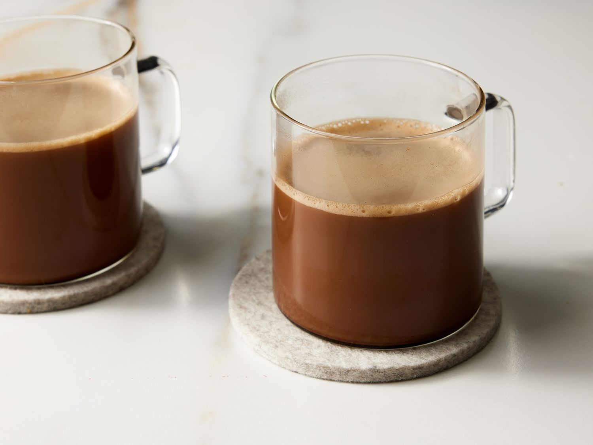

Mocha Coffee Recipe

Description
Indulge in the rich harmony of espresso and velvety chocolate with our irresistible mocha coffee recipe.
This is the easiest Mocha Coffee recipe in the world!
Perfectly balanced, this decadent blend offers a delightful marriage of robust coffee flavor and creamy cocoa goodness, creating a luxurious treat for any coffee lover.
Whether you're starting your day or seeking a cozy afternoon pick-me-up,
our easy-to-follow recipe will guide you to craft the perfect cup of mocha magic in the comfort of your own home.
Ingredients
- 1 cup hot brewed coffee
- 1 tablespoon unsweetened cocoa powder
- 1 tablespoon white sugar
- 2 tablespoons milk
Steps
- Gather all ingredients.
- Pour hot coffee into a mug. Stir in cocoa, sugar, and milk. And serve your beautiful Mocha Coffee